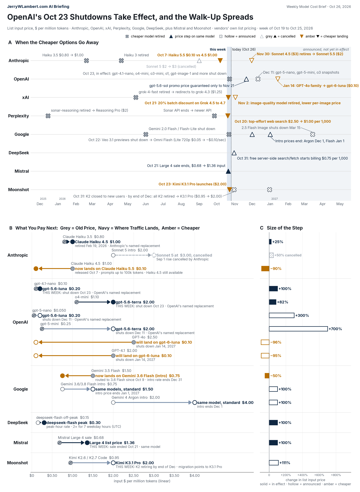

Weekly Model Cost Brief: October 19–25, 2026
OpenAI's October 23 Shutdowns Take Effect, and the Walk-Up Spreads to Mistral, Google and Moonshot

The Walk-Up
AI vendors rarely raise the price of a model you already use. They do something quieter. They retire it, name a successor, and let the traffic follow. When the successor lists higher, every default route, fallback route and hard-coded model name that pointed at the old model now pays the new price, and no number on the old price list ever changed. Over time operators get walked up a cost scale. The cheap model goes away, the next place that traffic can land costs more, and the step at the low end of a lineup is often +25% to +700% on list input price.
The vendor controls both halves of that move. It decides which model retires and when, and it decides which model is named as the replacement. That is why I track forced moves, not headline prices.
This was the week the walk-up stopped being a forecast. OpenAI's October 23 shutdowns took effect, so anyone still calling gpt-4.1-nano or o4-mini is now paying for gpt-5.6-luna or gpt-5.6-terra: +100% to +200% on the cheapest route and +82% to +173% on the small reasoning route. The same week, Mistral let a sale lapse and doubled the price of its flagship on the same model, Google shut down its cheapest video preview and pointed it at a model that costs about twice as much per second, and Moonshot told developers that its whole K2 line retires by the end of December, with a migration path to a model that lists +111% higher on input.
How to read the chart above:
- Panel A. One row per vendor. Grey ✕ marks a cheaper model retired; navy ▲ marks a price step on the same model; amber ▼ marks a move that lands somewhere cheaper. Hollow markers are announced but not yet in effect; a grey triangle is a rise that was announced and then cancelled. The shaded blue band is the week of Oct 19 to Oct 25; the dashed line is Oct 26.
- Panel B. Linear $ per million input tokens. Grey dots are the old price; navy dots are where traffic lands next; amber dots are cheaper landings (hollow when announced but not yet in effect).
- Panel C. The same step as a percentage. Solid bars are in effect, hollow bars are still pending, and amber bars are price decreases. Retirements whose old list price is no longer posted, and video models billed per second, appear on the timeline only.
Vendors covered, in priority order: Anthropic, OpenAI and xAI (Grok) first; then Perplexity, Google (Gemini) and DeepSeek. Mistral and Moonshot appear this week because they sharpen the same story. All prices are list prices per million tokens unless stated.
What Changed This Week (Oct 19 to Oct 25)
Anthropic. No list price changed and no new retirement was announced. Claude Haiku 4.5 ($1 input / $5 output) is still listed as active, past its earliest possible retirement date of Oct 15. The next scheduled move is Claude Sonnet 4.5, which retires Nov 30, 2026, with Claude Sonnet 5.5 named as the replacement. That one lands cheaper: $3 / $15 today, $2 / $10 on Sonnet 5.5 (a 33% cut on both). Claude is now also offered through Google Cloud under Anthropic's own management, including Opus 5.5 fast mode at $8 / $40, twice the standard $4 / $20. Fast mode is opt-in, so it stays off the price-step panels.
OpenAI. The walk-up arrived on schedule. OpenAI's deprecations page now reads that access to the April 22 group of older models "was shut down on October 23, 2026." The named replacements:
| Shut down Oct 23 | Old input / output | Named replacement | New input / output | Input change | Output change |
|---|---|---|---|---|---|
| gpt-4.1-nano | $0.10 / $0.40 | gpt-5.6-luna | $0.20 / $1.20 | +100% | +200% |
| o4-mini | $1.10 / $4.40 | gpt-5.6-terra | $2.00 / $12.00 | +82% | +173% |
| gpt-image-1 (image tokens) | $10 / $40 | gpt-image-2.5 | $8 / $30 | −20% | −25% |
The same shutdown moved o3-mini, o1, o1-pro, GPT-4, GPT-4 Turbo and the May 2024 GPT-4o snapshot to gpt-5.6-sol, and gpt-3.5-turbo to gpt-5.6-terra. OpenAI no longer posts the old list prices for those models, so I show them on the timeline only. The landing price deserves attention. gpt-5.6-sol lists at $4 input / $20 output, which OpenAI describes as promotional pricing, 20% and 33% below its earlier rate, "available at least through November 21, 2026." If the earlier rate returns after that date, everything that just landed on gpt-5.6-sol takes a second step of about +25% on input and +50% on output without any new announcement. Prompts over 272,000 tokens on gpt-5.6-sol already pay 2× input and 1.5× output. The next wave is unchanged: on Dec 11 gpt-5-nano moves to gpt-5.6-luna ($0.05 → $0.20 input, +300%) and gpt-5-mini to gpt-5.6-terra ($0.25 → $2.00, +700%).
xAI (Grok). No text-model list price or retirement changes. Grok 4.7 stays at $2.00 input / $6.00 output for prompts under 200,000 tokens, and grok-4.3 stays at $1.25 / $2.50. By Oct 21 xAI extended its 20% batch discount to Grok 4.7, 4.6 and 4.5, which had no batch discount the day before. That is a cheaper option for work that can wait up to a day, not a forced move. xAI's scheduled Nov 2 retirement of its quality image model also lands lower (see counter-examples).
Perplexity. No change to model token rates. On Oct 20 Perplexity confirmed that its highest-effort setting bills web search at the fast rate, $1.00 per 1,000 calls instead of $2.50, matching the lower settings. On Oct 23 it renamed the "preset" setting to "effort" with no change to models or pricing.
Google (Gemini). On Oct 22 Google shut down its Veo 3.1 video previews and the Gemini Omni Flash preview, naming Gemini Omni Flash (gemini-omni-1.1-flash) as the replacement for all of them. Omni Flash bills by output tokens, which Google equates to roughly $0.10 per second of 720p video. Against the retired previews at 720p:
| Retired Oct 22 | Old price per second (720p) | Replacement | Approximate new price | Change |
|---|---|---|---|---|
| Veo 3.1 Lite | $0.05 | Gemini Omni Flash | ~$0.10 | about +100% |
| Veo 3.1 Fast | $0.10 | Gemini Omni Flash | ~$0.10 | about flat |
| Veo 3.1 Standard | $0.40 | Gemini Omni Flash | ~$0.10 | about −75% |
| Gemini Omni Flash preview | $1.50 input per million | Gemini Omni Flash | $1.50 input per million | flat |
That is the walk-up in its purest form. The cheapest tier doubled and the premium tier got cheaper, so the operators who picked the lowest-cost option pay the most for the change. The token-model schedule is unchanged: Gemini 4 Argon steps from $2.00 to $4.00 input (and $10 to $20 output) on Dec 1, and Gemini 3.6 and 3.8 Flash step from $0.75 to $1.50 input on Jan 1, 2027. Both are +100% on the same model.
DeepSeek. No token price changes. deepseek-flash stays at $0.15 input / $0.60 output off-peak and $0.30 / $1.20 at weekday peak hours (01:00 to 04:00 and 06:00 to 10:00 UTC). The next dated change is a free-to-paid step: server-side web search and fetch calls made through DeepSeek's API from popular coding tools are free today and start billing at $0.75 per 1,000 successful requests at 00:00 Beijing time on Nov 1, which is 11:00 AM CT on Saturday, Oct 31.
Mistral. On Oct 21 the sale on Mistral Large 4 ended. Input went from $0.68 to $1.36 per million, cached input from $0.07 to $0.14, and output from $2.09 to $4.18: +100% across the board on the same model, with no retirement involved. Last week I noted the sale had no posted end date. It ended a week later.
Moonshot (Kimi). On Oct 23 Moonshot launched Kimi K3.1 Pro at $2.00 input / $10.00 output (plus a HighSpeed version at $4.00 / $20.00) and posted a notice: starting Oct 31 its K2 models are closed to newly registered users, and it plans to retire all K2 models by the end of December 2026, with its migration guide pointing to K3.1 Pro. Kimi K2.6 and K2.7 Code list at $0.95 / $4.00, so the move is +111% on input and +150% on output. K2.7 Code HighSpeed ($1.90 / $8.00) maps to K3.1 Pro HighSpeed at the same +111% / +150%. Moonshot has not posted an exact retirement date.
Counter-Examples (Keep the Claim Honest)
Not every move goes up, and the exceptions are worth pricing on their own:
- OpenAI, Oct 23 (in effect): gpt-image-1 moved to gpt-image-2.5 at lower image rates, $10 → $8 on image input (−20%) and $40 → $30 on image output (−25%). Text input is flat at $5.
- OpenAI, Jan 14, 2027 (announced Oct 14): GPT-4o ($2.50 input), GPT-4.1 ($2.00), GPT-4.1 mini ($0.40) and GPT-4o mini ($0.15) all land on gpt-6-luna at $0.10 input / $0.50 output, a 33% to 96% cut on input. Price that against whether gpt-6-luna can do the job.
- Google, Oct 22 (in effect): Veo 3.1 Standard users moved to a replacement that costs roughly 75% less per second at 720p; Veo 3.1 Fast users land about flat; the Omni Flash preview moved to the released model at an unchanged price.
- xAI, Nov 2 (scheduled): the quality image model retires and is served by Grok Imagine Image 2.0 at low quality, at $0.04 instead of $0.05 per 1K image (−20%), with similar cuts at 1.5K and 2K.
- Perplexity, Oct 20: top-effort web search $2.50 → $1.00 per 1,000 calls (−60%).
- Moonshot, Oct 23: Kimi K3.1 Pro ($2 / $10) lists 33% below Kimi K3 ($3 / $15). K3 is not retiring, so this is a cheaper new option, not a forced move.
- Anthropic, carried forward: Claude Haiku 5.5 is $0.10 / $0.50 for prompts up to 100,000 tokens against Haiku 4.5 at $1 / $5, and Sonnet 4.5 ($3) retires Nov 30 onto Sonnet 5.5 ($2).
The pattern holds where it hurts most: the cheapest model in a lineup is the one most likely to be retired onto something pricier, and flagship and premium tiers are where the cuts show up.
What Operators Should Do With This
- Check your bill for the Oct 23 landing. Any traffic still pointed at gpt-4.1-nano, o4-mini, o3-mini, o1 or the older GPT-4 snapshots is now billed at the replacement's price. Confirm what you are actually being charged for, then decide whether the named replacement is the right one or whether a cheaper model will do.
- Budget gpt-5.6-sol at more than $4 / $20. Its current price is promotional and only guaranteed through Nov 21, 2026. Plan for the earlier rate coming back.
- Put Dec 1, Dec 11 and Jan 1 on the calendar. Gemini 4 Argon doubles on Dec 1, gpt-5-nano and gpt-5-mini shut down on Dec 11 (+300% and +700% on input), and Gemini 3.6 and 3.8 Flash double on Jan 1, 2027.
- Treat every sale and intro price as temporary. Mistral Large 4's sale had no posted end date and ended anyway. Budget at the list price.
- Price your Moonshot K2 exit now. K2 closes to new sign-ups on Oct 31 and retires by the end of December. Compare K3.1 Pro (+111% input) against other models before the default path decides for you.
- Watch tool calls, not just tokens. DeepSeek search and fetch calls start billing at $0.75 per 1,000 on Oct 31; Perplexity's search got cheaper. Per-call fees are where small bills quietly grow.
- Re-test video workloads. If you ran Veo 3.1 Lite, your cost per second roughly doubled on Oct 22. If you ran Veo 3.1 Standard, it fell sharply. Either way the model changed, so check output quality too.
All prices and dates in this brief come from the vendors' own pricing, model and deprecation pages. No third-party price lists were used.